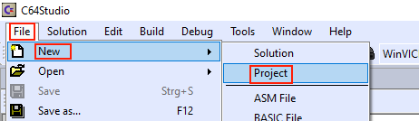

Create a new project via main menu

Create a new project via Solution Explorer (only available once a Solution is opened)

The wizard in all its glory
The wizard asks for the name of the new project. Per default a sub folder with the same name will be created and the project file (.c64) will be placed inside.
When no solution exists yet an accompanying solution file (.s64) is created and placed inside the project folder.

The new project as shown in the Solution Explorer
The Solution Explorer shows the new empty project. Now you are ready to start adding content.